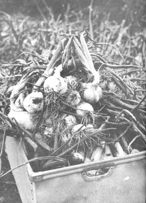

Mature onions should always be dug (never pulled) their roots are left intact. Some gardeners wait until the plants' tops have completely died before harvesting the bulbs but I prefer digging my onions as soon as their growth has stopped (when about one-half the tops have fallen over). The weather is very erratic here in southeast Nebraska and, left in the ground, onions sometimes start a second a growth (which spoils their keeping qualities).